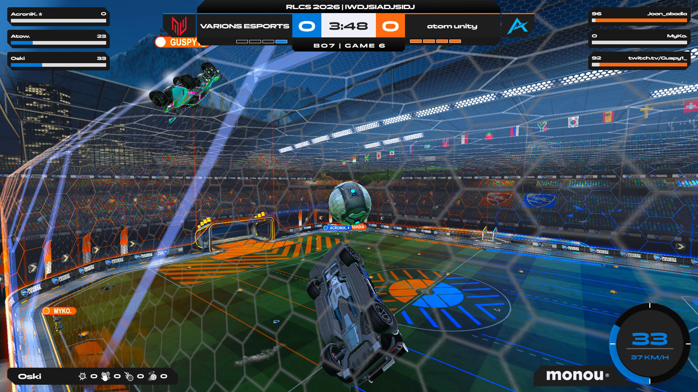
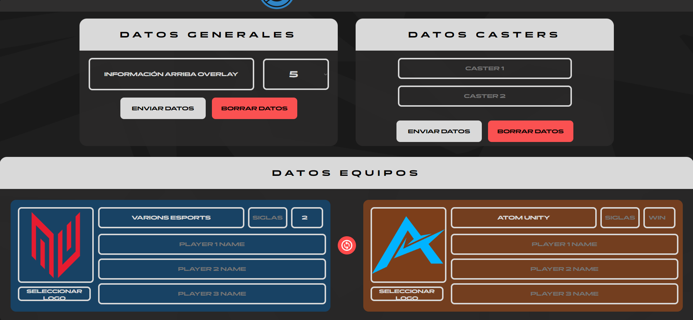

Si eres organizador de torneos de Rocket league con este overlay puedes personalizar para que se vea tu marca y tambien ves datos a tiempo real. Con el control panel te puedes controlar todo el overlay de forma muy facil.